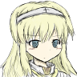
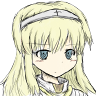

Jeanne of d`Arc. This is the character that meets us one of the first. The events of the game literally begin with her. She comes to us and lets us out of prison. Black souls makes a lot of curtsies in the direction of the Dark souls series of games. And not just with the title, but also with the intro. At the beginning of these two games, the main character is chillin' in prison.
Tale of black soul
"Yes, I am certain that my enemies can kill my body, but they can never destroy my soul."
 

The protagonist of dark souls and black souls is in prison.
And in both games someone rescues us. In Dark souls it was Oscar from Astora, or simply a knight in armor that threw the protagonist a key and he was able to get out of his cell. In Black souls almost the same thing happens. The protagonist was imprisoned by some monsters. Jeanne Dark defeats them and notices the protagonist and tells him "You are a strange undead in your eyes still has the light of life. If you hear the voice of God, move your feet. And shed light on this world" and then leaves. We find the key from the monster she killed and get out of the prison.
Oscar and Jeanne.
Further we make our way through the prison killing monsters on our way and familiarizing ourselves with the game. We meet not the strongest enemies and get outside where we are met by Jeanne. She tells us why she's here. She wants to save this land from the dark fog that makes all people become demons. Her homeland is already completely covered in fog. She says she'll protect us and take us to safety in the land of the fairies. And this is where the differences from Dark Souls begin. In Dark Souls, we meet our saviour when he's dying.
The dying Oscar of Astoria.
He tells us why he saved us and gives us Estus. There's a prophecy about the chosen undead that will strike the bell and continue the age of fire. Estus is Fire in a bottle that can warm us. A local first aid kit that we replenish at bonfires. Bonfires are local checkpoints and resting places that are scattered around the world. In Black Souls they are also present and fulfil the same function as in Dark Souls. Further we pass not a large part of the location in the company of Jeanne until we reach one point. Where she makes us promise to help her save the land from the fog. After that she wants to continue on her way. But a dragon arrives and burns Jeanne with its fire. This, by the way, puts her very close to her prototype. The real Joan of Arc. At the end of her life, she was caught and executed at the stake.
Dragon attack
The real Joan of Arc
After we are shown her death, it is our turn. The battle with the dragon begins. In this battle, we have to die in the story. So that we can go back to him and get revenge. Twice or thrice. Because that dragon refuses to die for nothing. Although there is a way to kill the dragon the first time. But it's very difficult. And that's where the differences with Dark Souls come in. In Dark Souls, you also meet a very strong boss at the very beginning. "The Demon of Refuge. When you first meet it, you only have a broken sword, which does a ridiculous amount of damage. While the boss can kill you with one or two blows. But the main difference is that you don't have to die from this boss, but run away through the passage. Where you will find normal weapons and where you will be given tips on how to play, and you will also meet the knight that saved you and he will give you Estus. And with this it will be much easier to kill the boss. This boss can also be killed at the first meeting. If you choose black bombs as your starting gift. They deal a lot of damage to him. For that you even get a special weapon. The boss mace. Which you won't get if you run away and come back to the boss with a new weapon. After defeating the boss in one or the other game we get to the Hub location. As the game progresses, more and more npcs will appear there. Some we will rescue, some we will just meet in the world and can talk to them here later, and some will come themselves. Here we also get acquainted with the pumping of the character for souls and with the local plot. In Drak Souls we are told that there are actually two bells. One is high up and the other is underground. In the world of Black Souls, there are five demon princesses. Rapunzel, frog princess, mermaid and snow white. Each of them has a ring, and need to collect all that would enter the castle of the most important princess, Cinderella, which is said to be responsible for the fog that turns everyone into demons. It may seem that the plot in these games is different, but not really. After some point in Dark Souls we go looking for great souls. They are needed to get into the crucible of flames and fight the final boss. As you can see Black Souls is a copy of Dark Souls on a different engine and in a fairy tale setting. If I may continue to talk only about Black Souls. So much is taken from Dark Souls that it even has its own poison swamp network. That's where we can meet the Kraken. Killing it will give us a Kraken tentacle. Further in the game, we can return to the place from the beginning of the game, take revenge on the dragon, if he killed us and find Jeanne's ashes. After that, in the local catacombs, where skeletons live. You can find a skeleton shaman. Who was able to capture Jeanne's soul that accidentally wandered into the catacombs. And he will use the ashes and the tentacle to bring Jeanne back to life. After which she becomes our companion. Further it remains only to raise her relationship to the maximum and go to the final boss. There after the victory you can choose with which of the companions will remain the protagonist and what will be the ending. And unfortunately Jeanne will not have a happy ending.....